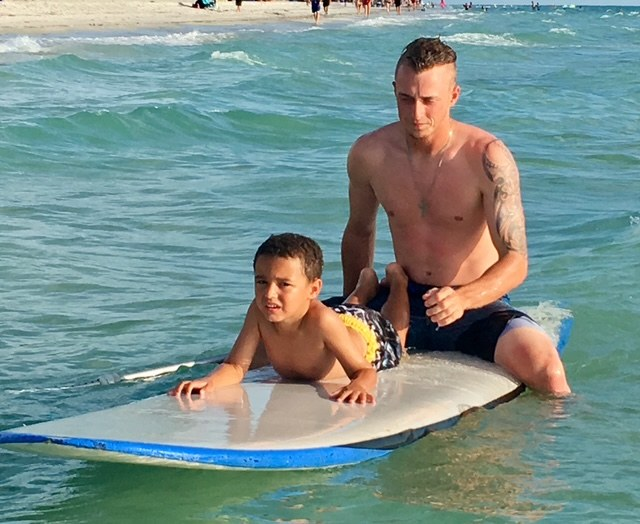
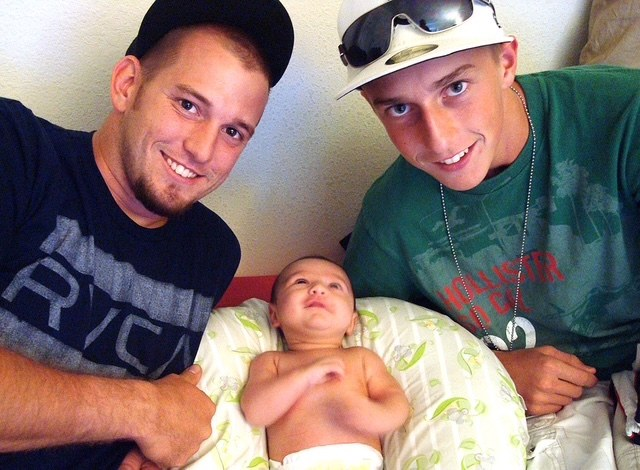

01 · Who is Evan?
Meet the kid behind all of this.
Evan is my third son and his mother Raniyah’s first. He is nonverbal. He has been mainstreamed with his peers since first grade. Socially, he has always found a way in — eye contact, expression, body language, presence.
Academically, those same tools are not enough. You cannot explain an answer with eye contact. You cannot tell a teacher which part you understand with body language. For a while, frustration did not make Evan act out. It looked more like he simply shut down.
And yet, if you watched him closely, there were signs that something much bigger was still happening inside him.



The ocean has always been one of the places where Evan seems most at peace. “He could stand there for hours. It’s like he’s listening to God.”